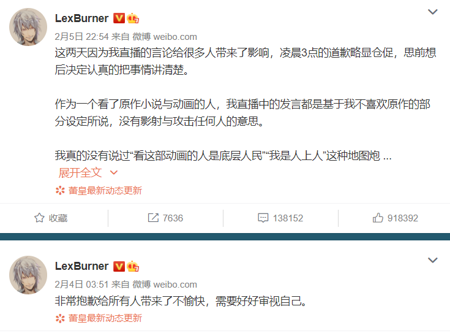
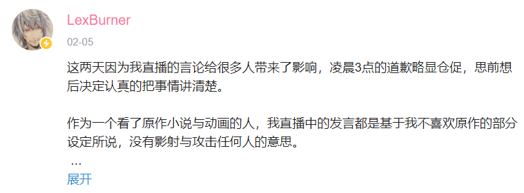
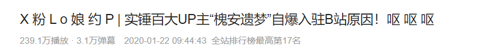
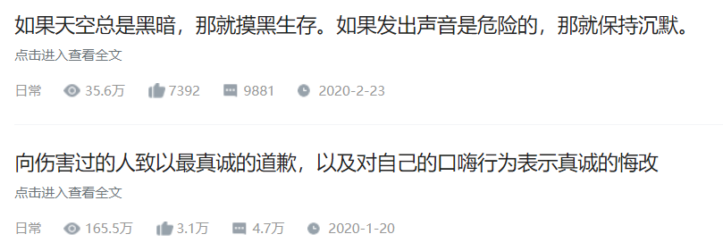

【lexburner事件】
【人物介绍】2014年开始在b站活动，以ACG相相关领域的杂谈为主做视频，主要以【动画吐槽】为卖点。
在评价内容上偏向于寻找动画内容中的缺点。特别是对一些风评相对好的动画更是存在这种偏向，有一定程度的营造自己理中客形象的用意。
从2016到2017年开始产生大量相对优质内容，慢慢从动画杂谈区顶流成长为整个b站的流量顶流，
后在b站统筹下加入阴阳怪气男团，通过做生活区视频和参加b站综艺，持续爆火，
同时，其杂谈内容质量开始走低，以【吐槽整活】为主做视频。获得2019和2020b站百大up荣誉。
【事件经过】
2021-2-1到2-2，lex在直播对当时在b站播出的动画【无职转生~到了异世界就拿出真本事】（以下简称无职）进行点评，其中部分观点
【对无职共情的都是社会底层】
【认真点评这部动画的长篇都是漫画婆罗门（嘲讽漫评者的说法）】
且对长评作者有过接近人身攻击的语言。
录播一经放出，很多人都来其直播间声讨，大致成员有
【无职的粉丝】【不满其言论的路人】【对lex转型和低创视频早已不满的老粉丝】【认为lex热度德不配位早就想拉下他的路人】
于是在2-3的直播中，lex和部分人展开骂战，其中在激动情绪中，lex又对【泛式】【瓶子君152】为主的其他动画去up发表了不当言论。
而这些言论更加激起很多人的不满，大量用户在b站最近评论区下声讨。
2-4，lex在微薄单方面道歉，被认为讨好微博女粉逃避节奏，再度被攻击，2-5，b站微博双面道歉。
然而，事情已经到了不可扭转的地步，因为其言论和动画无职紧紧联系在一起，
部分lex粉丝转而攻击无职，以【女性权益】为论点对无职和b站本身展开攻击，
使得b站次日下架无职，同时，部分合作品牌宣布终止和b站的合作。
2-8，b站封禁了lexburner的账号，并以违反社区相关规则，违约合同的名义，对其追究法律责任，事件到此结束。
【辟谣】在传播最广的一张lex语录中，有一句话“你们只配在下水道里度过相对失败的人生”不是lex说得，
而是up【魔法少女乐府酱】说得，很多几十万粉的up也受了误导，特此说明。
作者宁愿违约也不让b站播也是谣言，下架是b站单方面的操作。
【买粉】在声讨过程中，很多人发现了lex粉丝中的零级号众多，且在东窗事发后，占比持续攀升，
到达了百万级别，可以见得早已存在买粉行为。属于流量造假。
【相关录播和图片】
BV1ef4y167ZT
BV1gK4y1Q741
BV1uU4y1x779


【观测者认为】
Lex暴死与其口嗨，认知水平低等有着密不可分的因素，因此得罪过很多人，
也让很多人产生了其德不配位的看法，这是和性格有关，属于根本原因。
主要原因：事情的爆发，和外部大环境密不可分，自2020以来，很多网友步入社会，
特别是很多人受了左的思想引导，【对底层人民的关怀】成了很多人的雷点，
一旦一个大up发表这种带有人上人的优越感的言论，很容易站在网络舆论的最低点，也展现了新一代网络价值观中的优秀层面。
其次，观测者想说，lex关于【对动画人物共情就是相关人士】【看这部动画就是认同其价值观】
【动画代表作者三观】这样的观点是错误的，体现了lex作为一个爆红者，突然上升一个阶层，
急于想要和过去的自己一刀两段的本质自卑性，急于从一个毫不相干的层面去寻找优越。
作者创作，观众观看，都是想从中得到自己需要的信息反馈，不能因此推测作者和观众的价值观，
也不能过多批判什么。这种三观决定论深深地影响了现在的很多作品，以近几年来说
【进击的巨人】【overload】【无职转生】【无能力者娜娜】都深受其害。
【槐安遗梦事件】
科普主要来源BV1c7411r7NV
【人物介绍】
【槐安遗梦】2019百大up，以连麦陪玩小姐姐玩绝地求生做视频为主。
【TOM表哥】b站锤人up，因为错误锤人，自感羞愧，删除了所有视频。
|
【流萤Zz】【毫无作为小地精】【两仪滚】
【事件经过】
在槐安遗梦成为百大之后，2020一月份，一名不明身份的人提供给了TOM表哥两份证据，
似乎表明了槐安遗梦存在很多不道德，甚至违法乱纪的行为，TOM表哥随机发视频锤人，由于其优秀的锤人前科，很多人深以为然，开始声讨槐安遗梦。
其中在道德败坏的问题上相对却有证据，而违法行为相对证据缺失。（以上内容全部来自事件发生了两三年前）
2020-1-20.槐安遗梦同时在发表专栏和视频，在道歉的同时，还对自己的很多行为澄清，把自己和违法行为撇清关系。
1-22，槐安遗梦曾经的朋友流萤发布视频，试图捶死槐安遗梦存在草粉等行为的事实。
虽然槐安遗梦的声明中说明自己只是口嗨，且确实没有铁的证据证明。
因为两人的互相锤，流萤的口嗨形象也被揭露出来，自己也到了一个不做好的地步。
但是，至此，槐安遗梦道德败坏，素质低下的形象已经确切定下，不配作为一名百大up了。
1-23，好不作为小地精发表视频，揭露了当年自己帮助槐安遗梦又被卸磨杀驴，
槐安遗梦在打压她的同时还对其有非分之想的企图，且相对有充足的证据，再次坐实了其形象。
之后，两仪滚被槐安遗梦蓄意网爆，打压，攻击的事实也被揭露，至此，槐安遗梦被捶死。
1-28，up【贾先生O-O】发表视频，对整件事做了整理。


【观测者认为】对待一名公共人物，特别是有着较大影响力的人物，除了遵纪守法，
还是要遵守必要的道德底线，这是无法否认的。因此，虽然很多违法内容至今无法捶死，但是槐安遗梦也要对自己的其他行为负责。
同时，以贾先生的总结也存在很多问题，第一，部分时间线无法对上，比如，应该是槐安遗梦先回应，
流萤后自爆，第二，贾先生在分析中大量解析所谓的当事人心态，甚至不断提出动机嫉妒论，
这是一种以【唯心主义】为基础的【抽象人性论】，属于up主个人的价值判断，将这种个人价值观，
这种主观的论点当作客观事实来连接整件事，有失偏颇，后续又情绪激动，不利于客观叙事，因此，观测者也对其内容抱有一定怀疑。
【曹译文事件】
梗科普【打工人】
2020新热词，由【带篮子】带火，随后在互联网上传开，最初只是一种自我调侃的无奈，
|
后来慢慢成了很多工薪阶层和同情工薪阶层的一种口号和身份认同。
【介绍】曹译文是一个典型的富二代，家族产业雄厚，经常在b站做视频展示其生活。
【事件经过】随着打工人，这个梗的爆火，很多二创视频和无关视频都带上了打工人的内容。
2020-10-24，up曹译文，为了使用打工人这个梗，真的到了其产业地下的一个施工现场体验打工人生活，
然后其标题和在视频中指指点点的傲慢，毫不工作的态度，有意无意的炫富引起了具有相关身份认同感的人的不满，在视频下声讨。
标题如下
随后修改，自己也在评论区和网友对骂，但是依旧不能阻止网友的声讨，最终选择删除所有视频。
后续，很多相关人员出现，提出了曹译文塑造的有钱家庭精英形象都虚假的，很多学籍，人设都是靠着家族的钱权帮助塑造的。
值得注意的是，up【欣小萌】在11-9也出了打工人相关的工地体验视频，虽然并没有像曹译文一样严重，
也因为曹译文的前车之鉴，和自己在视频中表现出的【人上人体验底层生活】的态度，被网友声讨，之后做出道歉并删除视频。
【观测者总结】从lexburner到曹译文欣小萌，2020年开始，很多事件揭露了在社会外部压力巨大的内卷环境下，
和左派壮大发展的历史过程中，【对底层劳动人民的同情】成为很多相关身份认同群体的雷点，
一旦触发这个雷点，被网友声讨是不可避免的。同时，很多up在删除视频后很容易二度洗白自己，
因此记录在案是很有必要的。很多网友对一个人价值观的判断不在以他的事业，他的能力为主，而以相关的道德水平和共情力为主，体现了一定的先进性。
以上内容仅作史料，如有补充和错误请指正。